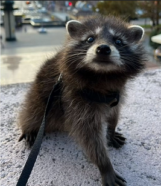
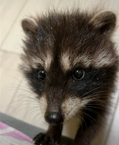
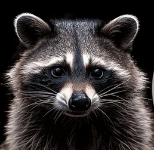

Biografía de Pedro
Pedro, el Mapache, nació en los recónditos rincones de la selva latinoamericana, un lugar donde la melodía de la naturaleza se entrelaza con los ritmos electrónicos. Desde temprana edad, Pedro mostró un amor innato por la música electrónica, moviéndose al compás de cada beat como si fuera su propia esencia. Su espíritu inquieto y su pasión por el baile lo llevaron a convertirse en una sensación viral, conquistando los corazones de miles con sus movimientos hipnóticos.
Con el surgimiento de las redes sociales en 2024, Pedro catapultó a la fama, convirtiéndose en un fenómeno de internet en toda Latinoamérica. Sus videos, donde se le veía danzando en círculos al ritmo de la música, se viralizaron rápidamente, convirtiéndose en memes y siendo compartidos por millones de usuarios. Pedro no solo era un mapache, sino un símbolo de alegría y diversión en tiempos difíciles.
A medida que su popularidad crecía, Pedro se convirtió en un ícono de la cultura de la música electrónica en la región. Su estilo único y su habilidad para contagiar energía positiva lo llevaron a colaborar con reconocidos DJs y a ser invitado a los festivales de música más importantes de Latinoamérica.Pedro demostró que la pasión y el talento pueden abrir puertas inimaginables, incluso para un modesto mapache de la selva.
Hoy en día, Pedro sigue siendo una figura querida y admirada, recordada por su impacto en la cultura popular y su capacidad para unir a las personas a través de la música y el baile. Su legado perdura en cada rincón de la internet, donde sus videos continúan inspirando sonrisas y movimientos de cadera. Pedro, el Mapache, sigue bailando en el corazón de todos aquellos que alguna vez se dejaron llevar por su ritmo inconfundible.